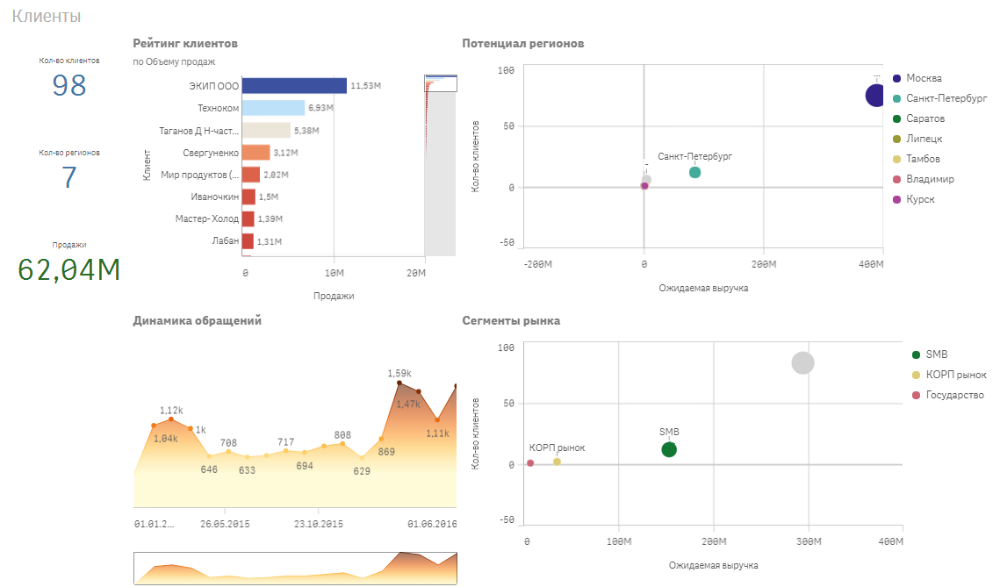
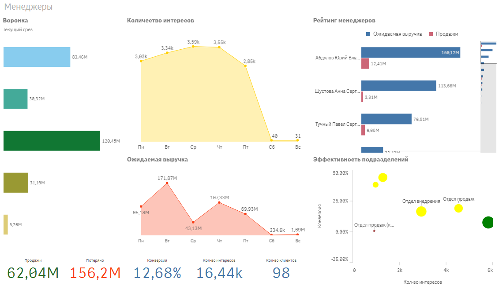
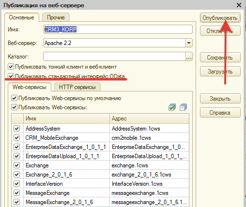
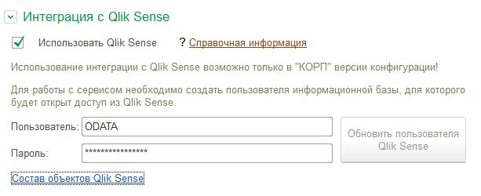

<!DOCTYPE html PUBLIC "-//W3C//DTD HTML 4.0 Transitional//EN"><html xmlns:o="urn:schemas-microsoft-com:office:office" xmlns:v="urn:schemas-microsoft-com:vml" xmlns="http://www.w3.org/1999/xhtml"><head><title>1C-CRM</title><meta content="text/html; charset=utf-8" http-equiv="Content-Type"></meta><style type="text/css">HTML {
	HEIGHT: 100%; WIDTH: 100%; FONT: 12px/18px Arial, Tahoma, Verdana, Helvetica, sans-serif
}
BODY {
	HEIGHT: 100%; WIDTH: 100%; BACKGROUND: #fff; COLOR: #000; PADDING-BOTTOM: 0px; PADDING-TOP: 0px; FONT: 12px/18px Arial, Tahoma, Verdana, Helvetica, sans-serif; PADDING-LEFT: 0px; MARGIN: 0px; PADDING-RIGHT: 0px
}
P {
	MARGIN: 0px 0px 10px
}
A {
	TEXT-DECORATION: none; COLOR: #4b53a8
}
A:hover {
	TEXT-DECORATION: underline
}
A IMG {
	BORDER-TOP-STYLE: none; BORDER-BOTTOM-STYLE: none; BORDER-RIGHT-STYLE: none; BORDER-LEFT-STYLE: none
}
UL {
	LIST-STYLE-TYPE: disc; PADDING-BOTTOM: 0px; PADDING-TOP: 0px; PADDING-LEFT: 0px; MARGIN: 0px 0px 10px 40px; PADDING-RIGHT: 0px
}
TD {
	PADDING-BOTTOM: 0px; PADDING-TOP: 0px; PADDING-LEFT: 0px; PADDING-RIGHT: 0px
}
TH {
	PADDING-BOTTOM: 0px; PADDING-TOP: 0px; PADDING-LEFT: 0px; PADDING-RIGHT: 0px
}
HR {
	BORDER-TOP-STYLE: none; HEIGHT: 1px; WIDTH: 100%; BACKGROUND: #a5a5a5; BORDER-BOTTOM-STYLE: none; FLOAT: none; COLOR: #a5a5a5; BORDER-RIGHT-STYLE: none; CLEAR: both; MARGIN: 15px 0px; BORDER-LEFT-STYLE: none
}
H1 {
	FONT-FAMILY: Arial, Tahoma, Verdana, Helvetica, sans-serif; FONT-WEIGHT: normal; MARGIN: 0px
}
H2 {
	FONT-FAMILY: Arial, Tahoma, Verdana, Helvetica, sans-serif; FONT-WEIGHT: normal; MARGIN: 0px
}
H3 {
	FONT-FAMILY: Arial, Tahoma, Verdana, Helvetica, sans-serif; FONT-WEIGHT: normal; MARGIN: 0px
}
H4 {
	FONT-FAMILY: Arial, Tahoma, Verdana, Helvetica, sans-serif; FONT-WEIGHT: normal; MARGIN: 0px
}
H1 {
	FONT-SIZE: 24px; COLOR: #f06d15; PADDING-BOTTOM: 10px; PADDING-TOP: 0px; PADDING-LEFT: 0px; LINE-HEIGHT: 30px; PADDING-RIGHT: 0px
}
H2 {
	FONT-SIZE: 19px; COLOR: #f06d15; PADDING-BOTTOM: 14px; PADDING-TOP: 8px; PADDING-LEFT: 0px; LINE-HEIGHT: 23px; PADDING-RIGHT: 0px
}
H3 {
	FONT-SIZE: 15px; FONT-WEIGHT: bold; COLOR: #f06d15; PADDING-BOTTOM: 12px; PADDING-TOP: 10px; PADDING-LEFT: 0px; LINE-HEIGHT: 20px; PADDING-RIGHT: 0px
}
H4 {
	FONT-SIZE: 12px; FONT-WEIGHT: bold; COLOR: #f06d15; PADDING-BOTTOM: 5px; PADDING-TOP: 5px; PADDING-LEFT: 0px; LINE-HEIGHT: 20px; PADDING-RIGHT: 0px
}
#wrap {
	MARGIN: 10px
}
.table_yellow {
	MARGIN-BOTTOM: 20px; BORDER-TOP: #f2e0c4 1px solid; BORDER-RIGHT: #f2e0c4 1px solid; WIDTH: 100%; BORDER-COLLAPSE: collapse; BORDER-BOTTOM: #f2e0c4 1px solid; BORDER-LEFT: #f2e0c4 1px solid
}
.table_yellow TD {
	VERTICAL-ALIGN: top; BORDER-BOTTOM: #f2e0c4 1px solid; PADDING-BOTTOM: 10px; PADDING-TOP: 10px; PADDING-LEFT: 10px; PADDING-RIGHT: 10px
}
.table_yellow TH {
	VERTICAL-ALIGN: top; BORDER-BOTTOM: #f2e0c4 1px solid; PADDING-BOTTOM: 10px; PADDING-TOP: 10px; PADDING-LEFT: 10px; PADDING-RIGHT: 10px
}
.table_yellow TD {
	BACKGROUND-COLOR: #fcfaeb
}
.table_yellow TH {
	TEXT-ALIGN: left; BACKGROUND-COLOR: #ffec8b
}
.table_yellow .number {
	WIDTH: 6%
}
.table_yellow .description {
	WIDTH: 47%
}
.table_yellow .comment {
	WIDTH: 47%
}
.text_green {
	COLOR: #4f8239
}
.note {
	BACKGROUND: #ffffc8; PADDING-BOTTOM: 8px; PADDING-TOP: 8px; PADDING-LEFT: 13px; BORDER-LEFT: #e19a4e thick solid; LINE-HEIGHT: 22px; PADDING-RIGHT: 8px
}
.text_important {
	BACKGROUND: #ffffc8; PADDING-BOTTOM: 8px; PADDING-TOP: 8px; PADDING-LEFT: 13px; BORDER-LEFT: #e19a4e thick solid; LINE-HEIGHT: 22px; PADDING-RIGHT: 8px
}
.text_important {
	FONT-STYLE: italic
}
.crm {
	VERTICAL-ALIGN: middle; TEXT-ALIGN: left; MARGIN: 0px 10px 0px 0px
}
pic {
	VERTICAL-ALIGN: middle; TEXT-ALIGN: left; MARGIN: 0px
}
.next {
	BACKGROUND: url(img/arrow_next.gif) no-repeat 100% 50%; FONT-WEIGHT: bold; PADDING-BOTTOM: 0px; PADDING-TOP: 0px; PADDING-LEFT: 5px; LINE-HEIGHT: 22px; PADDING-RIGHT: 18px
}
.top_title {
	FONT-SIZE: 28px; COLOR: #b38000; PADDING-BOTTOM: 10px; PADDING-TOP: 0px; PADDING-LEFT: 0px; LINE-HEIGHT: 34px; PADDING-RIGHT: 0px
}
.example LI {
	MARGIN-BOTTOM: 10px
}
</style><meta name="GENERATOR" content="MSHTML 11.00.9600.18212"></meta></head><body>
<p class="top_title"></img>Использование Qlik Sense для  расширенного анализа данных 1С:CRM</p><font face="Arial"><font size="3"><font face="Batang"><span style="FONT-SIZE: 9pt; FONT-FAMILY: 'Arial','sans-serif'; COLOR: black">
<p style="MARGIN: 0cm 0cm 0pt; TEXT-INDENT: 36pt"><span style="FONT-SIZE: 9pt; FONT-FAMILY: 'Arial','sans-serif'; COLOR: black"><span style="FONT-SIZE: 9pt; FONT-FAMILY: 'Arial','sans-serif'; COLOR: black; LINE-HEIGHT: 115%; mso-fareast-font-family: Batang; mso-ansi-language: RU; mso-fareast-language: EN-US; mso-bidi-language: AR-SA"><font size="2"><strong>Что такое Qlik Sense?</strong><span lang="EN-US" style="mso-ansi-language: EN-US"> </span></font></span></span></p>
<blockquote style="MARGIN-RIGHT: 0px" dir="ltr">
<p class="MsoNormal" style="MARGIN: 0cm 0cm 0pt; LINE-HEIGHT: normal" dir="ltr"><font size="2">Интеграция с Qlik Sense дает инструменты для самостоятельной визуализации и исследования данных, предназначенное для отдельных специалистов, групп и целых предприятий</font></p>
<p class="MsoNormal" style="MARGIN: 0cm 0cm 0pt; LINE-HEIGHT: normal" dir="ltr"> </p>
<p class="MsoNormal" style="MARGIN: 0cm 0cm 0pt; LINE-HEIGHT: normal" dir="ltr"><font size="2">Позволяет быстро создавать сочетания визуальных представлений, глубоко исследовать данные, мгновенно выявлять взаимосвязи и рассматривать возможности с любой точки зрения.<o:p></o:p></font></p>
<p class="MsoNormal" style="MARGIN: 0cm 0cm 0pt; LINE-HEIGHT: normal" dir="ltr"><o:p><font size="2"> </font></o:p></p>
<p class="MsoNormal" style="MARGIN: 0cm 0cm 0pt; LINE-HEIGHT: normal" dir="ltr"><font size="2">Возможности Qlik Sense:<span lang="EN-US" style="mso-ansi-language: EN-US"><o:p></o:p></span></font></p>
<p class="MsoNormal" style="MARGIN: 0cm 0cm 0pt 36pt; LINE-HEIGHT: normal; TEXT-INDENT: -18pt; mso-list: l0 level1 lfo1; tab-stops: list 36.0pt" dir="ltr"><font size="2"><span style="FONT-FAMILY: &quot;Arial&quot;,sans-serif; mso-fareast-font-family: Arial"><span style="mso-list: Ignore">•<span style="FONT: 7pt &quot;Times New Roman&quot;"><font face="Arial">       </font></span></span></span>Средства визуализации с возможностью перетаскивания объектов позволяют обнаруживать скрытые знания<o:p></o:p></font></p>
<p class="MsoNormal" style="MARGIN: 0cm 0cm 0pt 36pt; LINE-HEIGHT: normal; TEXT-INDENT: -18pt; mso-list: l0 level1 lfo1; tab-stops: list 36.0pt" dir="ltr"><font size="2"><span style="FONT-FAMILY: &quot;Arial&quot;,sans-serif; mso-fareast-font-family: Arial"><span style="mso-list: Ignore">•<span style="FONT: 7pt &quot;Times New Roman&quot;"><font face="Arial">       </font></span></span></span>Простота внедрения, поддержки и масштабирования<o:p></o:p></font></p>
<p class="MsoNormal" style="MARGIN: 0cm 0cm 0pt 36pt; LINE-HEIGHT: normal; TEXT-INDENT: -18pt; mso-list: l0 level1 lfo1; tab-stops: list 36.0pt" dir="ltr"><font size="2"><span style="FONT-FAMILY: &quot;Arial&quot;,sans-serif; mso-fareast-font-family: Arial"><span style="mso-list: Ignore">•<span style="FONT: 7pt &quot;Times New Roman&quot;"><font face="Arial">       </font></span></span></span>Исследование данных из множеств разнородных источников данных<o:p></o:p></font></p>
<p class="MsoNormal" style="MARGIN: 0cm 0cm 0pt 36pt; LINE-HEIGHT: normal; TEXT-INDENT: -18pt; mso-list: l0 level1 lfo1; tab-stops: list 36.0pt" dir="ltr"><font size="2"><span style="FONT-FAMILY: &quot;Arial&quot;,sans-serif; mso-fareast-font-family: Arial"><span style="mso-list: Ignore">•<span style="FONT: 7pt &quot;Times New Roman&quot;"><font face="Arial">       </font></span></span></span>Встраиваемые и пополняемые библиотеки данных и визуализаций<o:p></o:p></font></p>
<p class="MsoNormal" style="MARGIN: 0cm 0cm 0pt 36pt; LINE-HEIGHT: normal; TEXT-INDENT: -18pt; mso-list: l0 level1 lfo1; tab-stops: list 36.0pt" dir="ltr"><font size="2"><span style="FONT-FAMILY: &quot;Arial&quot;,sans-serif; mso-fareast-font-family: Arial"><span style="mso-list: Ignore">•<span style="FONT: 7pt &quot;Times New Roman&quot;"><font face="Arial">       </font></span></span></span>Построение отчетов и информационных панелей без привлечения ИТ-специалиста<o:p></o:p></font></p>
<p class="MsoNormal" style="MARGIN: 0cm 0cm 0pt 36pt; LINE-HEIGHT: normal; TEXT-INDENT: -18pt; mso-list: l0 level1 lfo1; tab-stops: list 36.0pt" dir="ltr"><font size="2"><span style="FONT-FAMILY: &quot;Arial&quot;,sans-serif; mso-fareast-font-family: Arial"><span style="mso-list: Ignore">•<span style="FONT: 7pt &quot;Times New Roman&quot;"><font face="Arial">       </font></span></span></span>Высокая скорость работы с большими объемами данных<o:p></o:p></font></p>
<p class="MsoNormal" style="MARGIN: 0cm 0cm 0pt 36pt; LINE-HEIGHT: normal; TEXT-INDENT: -18pt; mso-list: l0 level1 lfo1; tab-stops: list 36.0pt" dir="ltr"><font size="2"><span style="FONT-FAMILY: &quot;Arial&quot;,sans-serif; mso-fareast-font-family: Arial"><span style="mso-list: Ignore">•<span style="FONT: 7pt &quot;Times New Roman&quot;"><font face="Arial">       </font></span></span></span>Формирование интерактивных презентаций, встраивание отчетов в веб-страницы<o:p></o:p></font></p>
<p class="MsoNormal" style="MARGIN: 0cm 0cm 0pt 36pt; LINE-HEIGHT: normal; TEXT-INDENT: -18pt; mso-list: l0 level1 lfo1; tab-stops: list 36.0pt" dir="ltr"><font size="2"><span style="FONT-FAMILY: &quot;Arial&quot;,sans-serif; mso-fareast-font-family: Arial"><span style="mso-list: Ignore">•<span style="FONT: 7pt &quot;Times New Roman&quot;"><font face="Arial">       </font></span></span></span>Поддержка различных устройств<o:p></o:p></font></p>
<p class="MsoNormal" style="MARGIN: 0cm 0cm 0pt 36pt; LINE-HEIGHT: normal; TEXT-INDENT: -18pt; mso-list: l0 level1 lfo1; tab-stops: list 36.0pt" dir="ltr"><font size="2"><span style="FONT-FAMILY: &quot;Arial&quot;,sans-serif; mso-fareast-font-family: Arial"><span style="mso-list: Ignore">•<span style="FONT: 7pt &quot;Times New Roman&quot;"><font face="Arial">       </font></span></span></span>Индивидуальная и групповая работа с данными<o:p></o:p></font></p>
<p class="MsoNormal" style="MARGIN: 0cm 0cm 0pt 36pt; LINE-HEIGHT: normal; TEXT-INDENT: -18pt; mso-list: l0 level1 lfo1; tab-stops: list 36.0pt" dir="ltr"><font size="2"><span style="FONT-FAMILY: &quot;Arial&quot;,sans-serif; mso-fareast-font-family: Arial"><span style="mso-list: Ignore">•<span style="FONT: 7pt &quot;Times New Roman&quot;"><font face="Arial">       </font></span></span></span>Соблюдение политик безопасности предприятия</font></p>
<p class="MsoNormal" style="MARGIN: 0cm 0cm 0pt 36pt; LINE-HEIGHT: normal; TEXT-INDENT: -18pt; mso-list: l0 level1 lfo1; tab-stops: list 36.0pt" dir="ltr"><font size="2"></font><o:p><font size="2"> </font></o:p></p>
<p class="MsoNormal" style="MARGIN: 0cm 0cm 0pt 36pt; LINE-HEIGHT: normal; TEXT-INDENT: -18pt; mso-list: l0 level1 lfo1; tab-stops: list 36.0pt" dir="ltr"><o:p><font size="2"><strong>Примеры отчетов:</strong></font></o:p></p>
<p class="MsoNormal" style="MARGIN: 0cm 0cm 0pt 36pt; LINE-HEIGHT: normal; TEXT-INDENT: -18pt; mso-list: l0 level1 lfo1; tab-stops: list 36.0pt" dir="ltr"><o:p><font size="2"></font></o:p> </p>
<p class="MsoNormal" style="MARGIN: 0cm 0cm 0pt 36pt; LINE-HEIGHT: normal; TEXT-INDENT: -18pt; mso-list: l0 level1 lfo1; tab-stops: list 36.0pt" dir="ltr"><o:p><font style="BACKGROUND-COLOR: #ffff00" size="2"></img></font></o:p></p>
<p class="MsoNormal" style="MARGIN: 0cm 0cm 0pt 36pt; LINE-HEIGHT: normal; TEXT-INDENT: -18pt; mso-list: l0 level1 lfo1; tab-stops: list 36.0pt" dir="ltr"><o:p><font size="2"></font></o:p> </p><o:p><font size="2">
<p class="MsoNormal" style="MARGIN: 0cm 0cm 0pt 36pt; LINE-HEIGHT: normal; TEXT-INDENT: -18pt; mso-list: l0 level1 lfo1; tab-stops: list 36.0pt" dir="ltr"><o:p><font size="2"><font style="BACKGROUND-COLOR: #ffff00"></img></font></font></o:p></p></font></o:p>
<blockquote style="MARGIN-RIGHT: 0px" dir="ltr"><span style="FONT-SIZE: 9pt; FONT-FAMILY: 'Arial','sans-serif'; COLOR: black"><span style="FONT-SIZE: 9pt; FONT-FAMILY: 'Arial','sans-serif'; COLOR: black; LINE-HEIGHT: 115%; mso-fareast-font-family: Batang; mso-ansi-language: RU; mso-fareast-language: EN-US; mso-bidi-language: AR-SA">
<p class="note" style="MARGIN-RIGHT: 0px" dir="ltr" align="justify"> Более подробную информацию о Qlik Sense можно получить на сайте продукта <a href="https://buhphone.com/" target="_blank"><strong>http://global.qlik.com/ru/explore/products/sense</strong> </a></p></span></span></blockquote>
<p class="MsoNormal" style="MARGIN: 0cm 0cm 0pt; LINE-HEIGHT: normal" dir="ltr"></p></blockquote></span> </font> 
<p class="MsoNormal" style="MARGIN: 0cm 0cm 0pt; LINE-HEIGHT: normal" dir="ltr"><font size="2"><strong>Решение позволяет ответить на следующие вопросы:<o:p></o:p></strong></font></p>
<p class="MsoListParagraphCxSpFirst" style="MARGIN: 0cm 0cm 0pt 36pt; LINE-HEIGHT: normal; TEXT-INDENT: -18pt; mso-list: l1 level1 lfo2; mso-add-space: auto" dir="ltr"><font face="Arial"><font size="2"><span style="FONT-FAMILY: Symbol; mso-fareast-font-family: Symbol; mso-bidi-font-family: Symbol"><span style="mso-list: Ignore">·<span style="FONT: 7pt &quot;Times New Roman&quot;">         </span></span></span>Что сейчас происходит с продажами?<o:p></o:p></font></font></p>
<p class="MsoListParagraphCxSpMiddle" style="MARGIN: 0cm 0cm 0pt 36pt; LINE-HEIGHT: normal; TEXT-INDENT: -18pt; mso-list: l1 level1 lfo2; mso-add-space: auto" dir="ltr"><font face="Arial"><font size="2"><span style="FONT-FAMILY: Symbol; mso-fareast-font-family: Symbol; mso-bidi-font-family: Symbol"><span style="mso-list: Ignore">·<span style="FONT: 7pt &quot;Times New Roman&quot;">         </span></span></span>Какова эффективность продаж?<o:p></o:p></font></font></p>
<p class="MsoListParagraphCxSpMiddle" style="MARGIN: 0cm 0cm 0pt 36pt; LINE-HEIGHT: normal; TEXT-INDENT: -18pt; mso-list: l1 level1 lfo2; mso-add-space: auto" dir="ltr"><font face="Arial"><font size="2"><span style="FONT-FAMILY: Symbol; mso-fareast-font-family: Symbol; mso-bidi-font-family: Symbol"><span style="mso-list: Ignore">·<span style="FONT: 7pt &quot;Times New Roman&quot;">         </span></span></span>Лучше или хуже обстоят дела по отношению к прошлому периоду?<o:p></o:p></font></font></p>
<p class="MsoListParagraphCxSpMiddle" style="MARGIN: 0cm 0cm 0pt 36pt; LINE-HEIGHT: normal; TEXT-INDENT: -18pt; mso-list: l1 level1 lfo2; mso-add-space: auto" dir="ltr"><font face="Arial"><font size="2"><span style="FONT-FAMILY: Symbol; mso-fareast-font-family: Symbol; mso-bidi-font-family: Symbol"><span style="mso-list: Ignore">·<span style="FONT: 7pt &quot;Times New Roman&quot;">         </span></span></span>Кто наши клиенты? Кто нам приносит больше денег?<o:p></o:p></font></font></p>
<p class="MsoListParagraphCxSpMiddle" style="MARGIN: 0cm 0cm 0pt 36pt; LINE-HEIGHT: normal; TEXT-INDENT: -18pt; mso-list: l1 level1 lfo2; mso-add-space: auto" dir="ltr"><font face="Arial"><font size="2"><span style="FONT-FAMILY: Symbol; mso-fareast-font-family: Symbol; mso-bidi-font-family: Symbol"><span style="mso-list: Ignore">·<span style="FONT: 7pt &quot;Times New Roman&quot;">         </span></span></span>Каков потенциал регионов и сегментов бизнеса?<o:p></o:p></font></font></p>
<p class="MsoListParagraphCxSpLast" style="MARGIN: 0cm 0cm 0pt 36pt; LINE-HEIGHT: normal; TEXT-INDENT: -18pt; mso-list: l1 level1 lfo2; mso-add-space: auto" dir="ltr"><font face="Arial"><font size="2"><span style="FONT-FAMILY: Symbol; mso-fareast-font-family: Symbol; mso-bidi-font-family: Symbol"><span style="mso-list: Ignore">·<span style="FONT: 7pt &quot;Times New Roman&quot;">         </span></span></span>Как работают наши сотрудники? Насколько они эффективны?</font></font></p>
<p class="MsoListParagraphCxSpLast" style="MARGIN: 0cm 0cm 0pt 36pt; LINE-HEIGHT: normal; TEXT-INDENT: -18pt; mso-list: l1 level1 lfo2; mso-add-space: auto" dir="ltr"><font size="2"></font> </p>
<p class="MsoNormal" style="MARGIN: 0cm 0cm 0pt; LINE-HEIGHT: normal"><font size="2"><strong>Для включения интеграции необходимо:<o:p></o:p></strong></font></p>
<p class="MsoListParagraphCxSpFirst" style="MARGIN: 0cm 0cm 0pt 36pt; LINE-HEIGHT: normal; mso-add-space: auto"><o:p><font size="2"> </font></o:p></p>
<p class="MsoListParagraphCxSpMiddle" style="MARGIN: 0cm 0cm 0pt 36pt; LINE-HEIGHT: normal; TEXT-INDENT: -18pt; mso-list: l0 level1 lfo1; mso-add-space: auto"><font size="2"><span style="mso-bidi-font-family: Calibri; mso-bidi-theme-font: minor-latin"><span style="mso-list: Ignore">1.<span style="FONT: 7pt &quot;Times New Roman&quot;"><font face="Arial">       </font></span></span></span>Наличие версии платформы «1C:Предприятие» версии 8.3.5 или выше.<o:p></o:p></font></p>
<p class="MsoListParagraphCxSpMiddle" style="MARGIN: 0cm 0cm 0pt 36pt; LINE-HEIGHT: normal; TEXT-INDENT: -18pt; mso-list: l0 level1 lfo1; mso-add-space: auto"><font size="2"><span style="mso-bidi-font-family: Calibri; mso-bidi-theme-font: minor-latin"><span style="mso-list: Ignore">2.<span style="FONT: 7pt &quot;Times New Roman&quot;"><font face="Arial">       </font></span></span></span>Установленный и настроенный веб сервер. <span style="mso-spacerun: yes"> </span>Особенности установки и настройки веб сервера для работы с 1С описаны в документации к «1С:Преприятие».<o:p></o:p></font></p>
<p class="MsoListParagraphCxSpMiddle" style="MARGIN: 0cm 0cm 0pt 36pt; LINE-HEIGHT: normal; TEXT-INDENT: -18pt; mso-list: l0 level1 lfo1; mso-add-space: auto"><font size="2"><span style="mso-bidi-font-family: Calibri; mso-bidi-theme-font: minor-latin"><span style="mso-list: Ignore">3.<span style="FONT: 7pt &quot;Times New Roman&quot;"><font face="Arial">       </font></span></span></span>Опубликовать стандартный интерфейс <span lang="EN-US" style="mso-ansi-language: EN-US">ODATA</span><o:p></o:p></font></p>
<p class="MsoListParagraphCxSpMiddle" style="MARGIN: 0cm 0cm 0pt 36pt; LINE-HEIGHT: normal; mso-add-space: auto"><font size="2">В режиме «Конфигуратора» зайти в меню «Администрирование» - «Публикация на веб сервере». Установить галочку напротив «Публиковать стандартный интерфейс ODATA» и осуществить публикацию.<o:p></o:p></font></p>
<p class="MsoListParagraphCxSpMiddle" style="MARGIN: 0cm 0cm 0pt 36pt; LINE-HEIGHT: normal; mso-add-space: auto"><span style="mso-fareast-language: RU; mso-no-proof: yes"><v:shapetype id="_x0000_t75" coordsize="21600,21600" o:spt="75" o:preferrelative="t" path="m@4@5l@4@11@9@11@9@5xe" filled="f" stroked="f"><v:stroke joinstyle="miter"></v:stroke><v:formulas><v:f eqn="if lineDrawn pixelLineWidth 0"></v:f><v:f eqn="sum @0 1 0"></v:f><v:f eqn="sum 0 0 @1"></v:f><v:f eqn="prod @2 1 2"></v:f><v:f eqn="prod @3 21600 pixelWidth"></v:f><v:f eqn="prod @3 21600 pixelHeight"></v:f><v:f eqn="sum @0 0 1"></v:f><v:f eqn="prod @6 1 2"></v:f><v:f eqn="prod @7 21600 pixelWidth"></v:f><v:f eqn="sum @8 21600 0"></v:f><v:f eqn="prod @7 21600 pixelHeight"></v:f><v:f eqn="sum @10 21600 0"></v:f></v:formulas><v:path o:extrusionok="f" gradientshapeok="t" o:connecttype="rect"></v:path><o:lock v:ext="edit" aspectratio="t"></o:lock></v:shapetype></span><o:p></o:p> </p>
<p class="MsoNormal" style="MARGIN: 0cm 0cm 0pt 36pt; LINE-HEIGHT: normal; TEXT-INDENT: -18pt; mso-list: l0 level1 lfo1; tab-stops: list 36.0pt" dir="ltr"><o:p><font size="2"><font style="BACKGROUND-COLOR: #ffff00"></img></font></font></o:p></p></font>
<p class="MsoListParagraphCxSpMiddle" style="MARGIN: 0cm 0cm 0pt 36pt; LINE-HEIGHT: normal; mso-add-space: auto"><o:p></o:p> </p>
<p class="MsoListParagraphCxSpMiddle" style="MARGIN: 0cm 0cm 0pt 36pt; LINE-HEIGHT: normal; mso-add-space: auto"><o:p><font size="2"> </font></o:p></p>
<p class="MsoListParagraphCxSpLast" style="MARGIN: 0cm 0cm 0pt 36pt; LINE-HEIGHT: normal; TEXT-INDENT: -18pt; mso-list: l0 level1 lfo1; mso-add-space: auto"><font size="2"><span style="mso-bidi-font-family: Calibri; mso-bidi-theme-font: minor-latin"><span style="mso-list: Ignore">4.<span style="FONT: 7pt &quot;Times New Roman&quot;"><font face="Arial">       </font></span></span></span>В режиме «1С:Предприятие» п<span style="COLOR: black; mso-fareast-font-family: Batang; mso-bidi-font-family: Arial">ерейти в форму настроек – «Настройки системы» -  раздел  «<font face="Arial"><em><span style="FONT-FAMILY: &quot;Calibri&quot;,sans-serif; mso-bidi-font-family: Arial; mso-ascii-theme-font: minor-latin; mso-hansi-theme-font: minor-latin">Сторонние сервисы</span></em>» и включить  настройку «<em><span style="FONT-FAMILY: &quot;Calibri&quot;,sans-serif; mso-bidi-font-family: Arial; mso-ascii-theme-font: minor-latin; mso-hansi-theme-font: minor-latin">Использовать Qlik Sense</span></em>». Также необходимо создать пользователя (обязательно с паролем), под которым Qlik<span style="mso-spacerun: yes">  </span>Sense будет обращаться к 1С и определить состав объектов информационной базы, которые будут взаимодействовать с сервисом.<br></font></span></font> </p>
<p class="MsoNormal" style="MARGIN: 0cm 0cm 0pt 36pt; LINE-HEIGHT: normal; TEXT-INDENT: -18pt; mso-list: l0 level1 lfo1; tab-stops: list 36.0pt" dir="ltr"><o:p><font style="BACKGROUND-COLOR: #ffff00" size="2"></img></font></o:p></p>
<p class="MsoNormal" style="MARGIN: 0cm 0cm 0pt 36pt; LINE-HEIGHT: normal; TEXT-INDENT: -18pt; mso-list: l0 level1 lfo1; tab-stops: list 36.0pt" dir="ltr"><o:p><font size="2">Для интеграции необходимо как минимум отметить следующие объекты (по умолчанию они отмечены):</font></o:p></p>
<ul dir="ltr"><li>
<div class="MsoNormal" style="MARGIN: 0cm 0cm 0pt 36pt; LINE-HEIGHT: normal; TEXT-INDENT: -18pt; mso-list: l0 level1 lfo1; tab-stops: list 36.0pt"><o:p><font size="2">документ "Интерес"</font></o:p></div>
</li><li>
<div class="MsoNormal" style="MARGIN: 0cm 0cm 0pt 36pt; LINE-HEIGHT: normal; TEXT-INDENT: -18pt; mso-list: l0 level1 lfo1; tab-stops: list 36.0pt"><o:p><font size="2">справочник "Партнеры"</font></o:p></div>
</li><li>
<div class="MsoNormal" style="MARGIN: 0cm 0cm 0pt 36pt; LINE-HEIGHT: normal; TEXT-INDENT: -18pt; mso-list: l0 level1 lfo1; tab-stops: list 36.0pt"><o:p><font size="2">справочник "Состояние интересов"</font></o:p></div>
</li><li>
<div class="MsoNormal" style="MARGIN: 0cm 0cm 0pt 36pt; LINE-HEIGHT: normal; TEXT-INDENT: -18pt; mso-list: l0 level1 lfo1; tab-stops: list 36.0pt"><o:p><font size="2">справочник "Организации"</font></o:p></div>
</li><li>
<div class="MsoNormal" style="MARGIN: 0cm 0cm 0pt 36pt; LINE-HEIGHT: normal; TEXT-INDENT: -18pt; mso-list: l0 level1 lfo1; tab-stops: list 36.0pt"><o:p></o:p><o:p><font size="2"><o:p><font size="2">справочник "Подразделения предприятия"</font></o:p></font></o:p></div>
</li><li>
<div class="MsoNormal" style="MARGIN: 0cm 0cm 0pt 36pt; LINE-HEIGHT: normal; TEXT-INDENT: -18pt; mso-list: l0 level1 lfo1; tab-stops: list 36.0pt"><font size="2">справочник "Пользователи"</font></div>
</li><li>
<div class="MsoNormal" style="MARGIN: 0cm 0cm 0pt 36pt; LINE-HEIGHT: normal; TEXT-INDENT: -18pt; mso-list: l0 level1 lfo1; tab-stops: list 36.0pt"><o:p><font size="2">справочник "Причины отказов по интересам"</font></o:p></div>
</li><li>
<div class="MsoNormal" style="MARGIN: 0cm 0cm 0pt 36pt; LINE-HEIGHT: normal; TEXT-INDENT: -18pt; mso-list: l0 level1 lfo1; tab-stops: list 36.0pt"><o:p><font size="2">справочник "Важность клиентов"</font></o:p></div>
</li><li>
<div class="MsoNormal" style="MARGIN: 0cm 0cm 0pt 36pt; LINE-HEIGHT: normal; TEXT-INDENT: -18pt; mso-list: l0 level1 lfo1; tab-stops: list 36.0pt"><o:p></o:p><o:p><font size="2">справочник "Бизнес регионы"</font></o:p></div>
</li><li>
<div class="MsoNormal" style="MARGIN: 0cm 0cm 0pt 36pt; LINE-HEIGHT: normal; TEXT-INDENT: -18pt; mso-list: l0 level1 lfo1; tab-stops: list 36.0pt"><o:p><font size="2">справочник "Сегменты рынка"</font></o:p></div></li></ul><p class="MsoNormal" style="MARGIN: 0cm 0cm 0pt 36pt; LINE-HEIGHT: normal; TEXT-INDENT: -18pt; mso-list: l0 level1 lfo1; tab-stops: list 36.0pt" dir="ltr"> </p>
<p class="MsoNormal" style="MARGIN: 0cm 0cm 0pt 36pt; LINE-HEIGHT: normal; TEXT-INDENT: -18pt; mso-list: l0 level1 lfo1; tab-stops: list 36.0pt" dir="ltr"> </p></font><o:p><font size="2">
<p class="note" style="MARGIN-RIGHT: 0px" dir="ltr" align="justify"> <strong>Важно</strong>: Решение не является самостоятельным продуктом и для корректной работы необходимы лицензии Qlik Sense Enterprise. </p>
<p class="MsoNormal" style="MARGIN: 0cm 0cm 0pt 18pt; LINE-HEIGHT: normal"> </p></font></o:p>
<p class="MsoNormal" style="MARGIN: 0cm 0cm 0pt; LINE-HEIGHT: normal"><o:p><font size="2"> </font></o:p></p>
<p class="MsoNormal" style="MARGIN: 0cm 0cm 0pt; LINE-HEIGHT: normal"><font size="2">По всем вопросам обращайтесь <a href="mailto:crm@rarus.ru">crm@rarus.ru</a></font></p>
<p class="MsoNormal" style="MARGIN: 0cm 0cm 0pt; LINE-HEIGHT: normal"><font size="2"><strong><span lang="EN-US" style="mso-ansi-language: EN-US"></span></strong></font> </p><font size="2"><span lang="EN-US" style="mso-ansi-language: EN-US">
<p style="MARGIN: 0cm 0cm 0pt; TEXT-INDENT: 36pt"><span style="FONT-SIZE: 9pt; FONT-FAMILY: 'Arial','sans-serif'; COLOR: black"><span style="FONT-SIZE: 9pt; FONT-FAMILY: 'Arial','sans-serif'; COLOR: black; LINE-HEIGHT: 115%; mso-fareast-font-family: Batang; mso-ansi-language: RU; mso-fareast-language: EN-US; mso-bidi-language: AR-SA"></span></span><span style="FONT-SIZE: 9pt; FONT-FAMILY: 'Arial','sans-serif'; COLOR: black"><span style="FONT-SIZE: 9pt; FONT-FAMILY: 'Arial','sans-serif'; COLOR: black; LINE-HEIGHT: 115%; mso-fareast-font-family: Batang; mso-ansi-language: RU; mso-fareast-language: EN-US; mso-bidi-language: AR-SA"></span></span><span style="FONT-SIZE: 9pt; FONT-FAMILY: 'Arial','sans-serif'; COLOR: black"><span style="FONT-SIZE: 9pt; FONT-FAMILY: 'Arial','sans-serif'; COLOR: black; LINE-HEIGHT: 115%; mso-fareast-font-family: Batang; mso-ansi-language: RU; mso-fareast-language: EN-US; mso-bidi-language: AR-SA"></span></span></p></span></font><font size="2"><strong></strong></font><span style="FONT-SIZE: 9pt; FONT-FAMILY: 'Arial','sans-serif'; COLOR: black"><span style="FONT-SIZE: 9pt; FONT-FAMILY: 'Arial','sans-serif'; COLOR: black; LINE-HEIGHT: 115%; mso-fareast-font-family: Batang; mso-ansi-language: RU; mso-fareast-language: EN-US; mso-bidi-language: AR-SA"></span></span> </body></html>